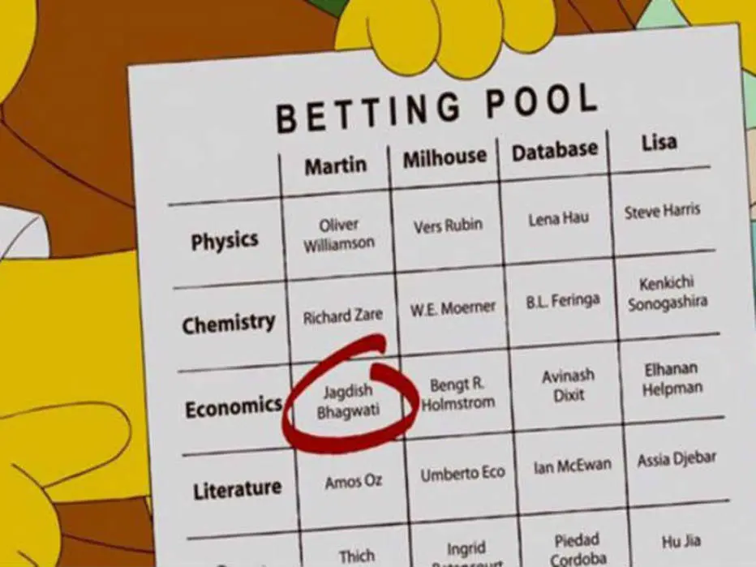
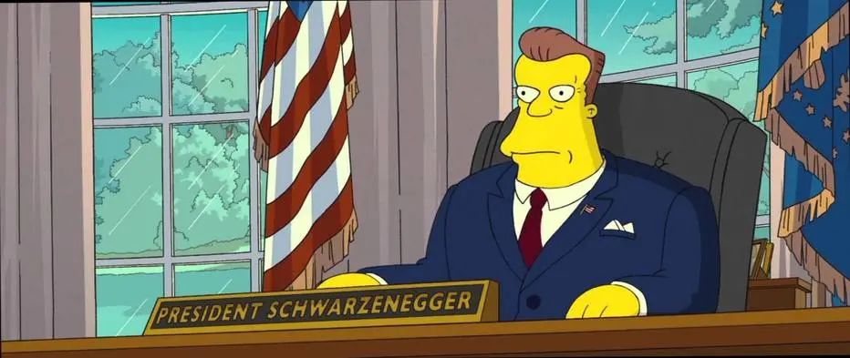
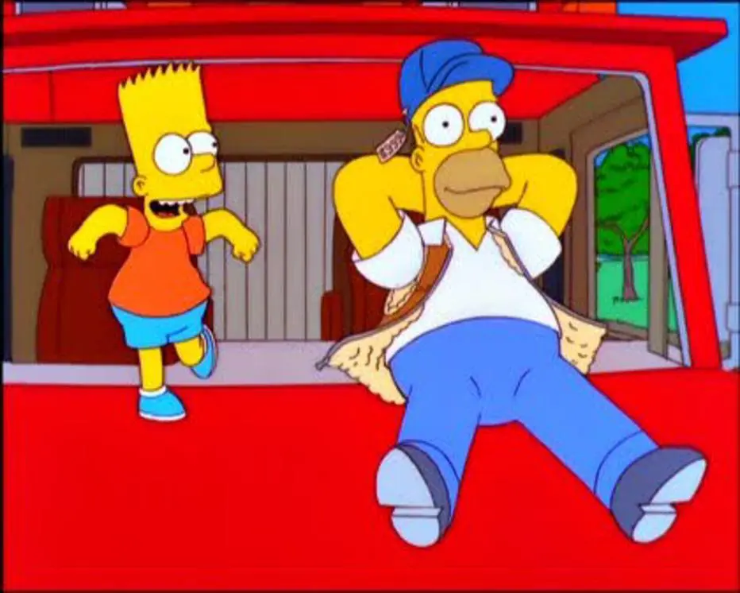
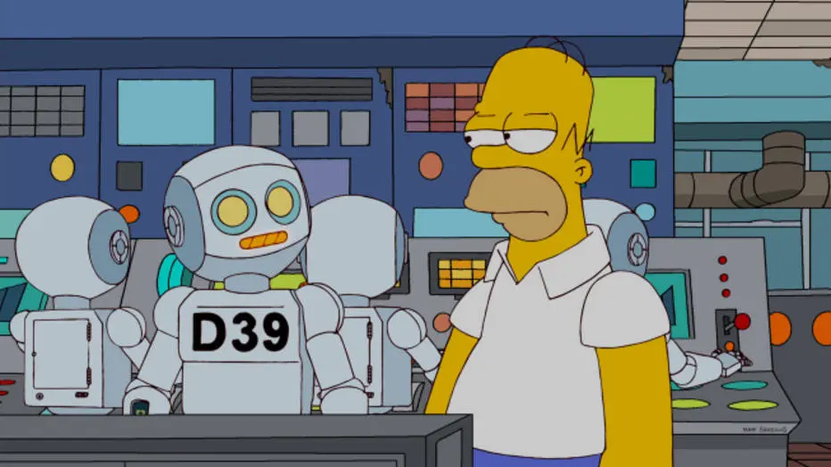
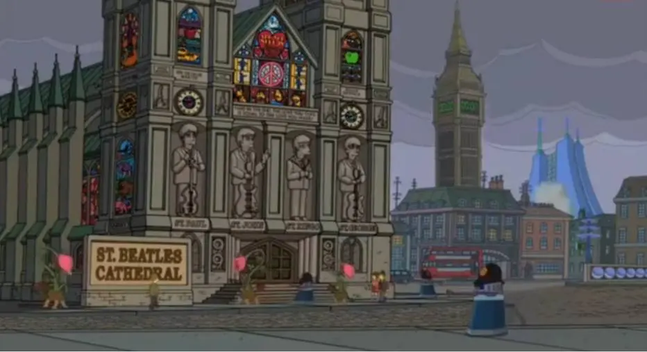

Nobel: Os Simpsons já anteciparam vários fatos mundiais, então por que duvidar que isso pode se repetir? No episódio "Elementary School Musical", os personagens fazem um bolão para adivinhar os vencedores do Nobel. Na Literatura, as duas apostas que podem se tornar realidade: são os escritores Amos Oz, de Israel, e Ian McEwan, do Reino Unido. Ainda segundo a série, o Nobel da Paz pode repetir 2016 e ir novamente para uma pessoa da Colômbia, desta vez para a advogada Piedad Córdoba.

Presidente Schwarzenneger: Em ‘Os Simpsons: O Filme’, de 2007, os roteiristas colocaram o ator Arnold Schwarzenneger, então governador da Califórnia, como presidente dos Estados Unidos. Pela Constituição norte-americana, ele não poderia ser presidente por não ser cidadão nascido no país, mas, do jeito que as coisas estão por lá, alguém pode falar com certeza que isso é impossível de acontecer?

Caminhões que dirigem sozinhos: Em ‘Maximum Homerdrive’, episódio que foi ao ar em 1999, Homer decide virar caminhoneiro e descobre o grande segredo da profissão: na realidade eles não fazem nada porque utilizam um aparelho que dirige os caminhões sozinho. Atualmente, empresas como Tesla e Mercedes-Benz fazem experiências com essa tecnologia e é bem provável que se torne realidade nas próximas décadas.

Robôs como força de trabalho: Para cortar gastos com seus trabalhadores, no episódio ‘Them, Robots’, de 2012, Mr. Burns demite todos os funcionários da usina nuclear de Springfield e os troca por robôs de baixa manutenção que podem trabalhar 24 horas por dia. A automatização maciça da força de trabalho é um tópico recorrente atualmente e que pode virar realidade muito em breve.

Catedral dos Beatles: Afinal, eles não falaram que eram mais famosos que Jesus? Para o seriado, a banda de Liverpool vai ganhar um santuário na Inglaterra. A situação aparece no episódio "Holidays of Future Passed".
